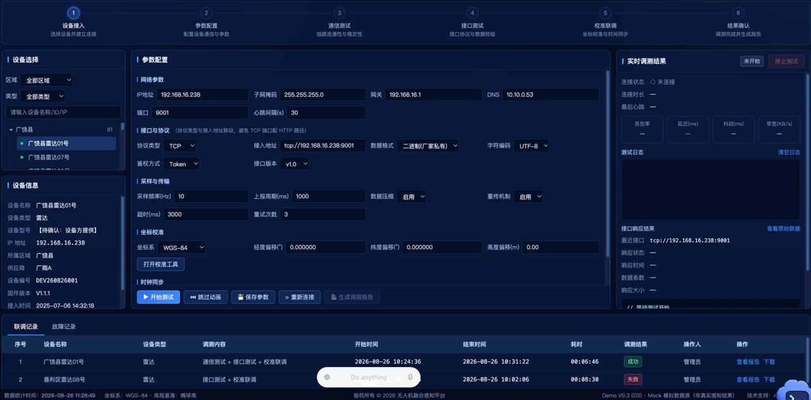
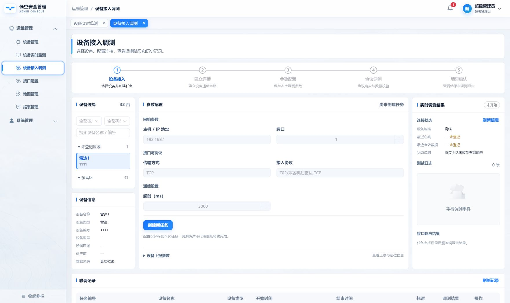

基准：用户图2的步骤栏、左侧设备、中间参数、右侧结果、底部记录。颜色沿用管理端浅色主题，保留真实支持的五步任务，不引入参考图中未实现的校准操作。使用既有 Element Plus 控件，无新增素材。


两轮核对：移除整块底部技术诊断表；收窄左右列、加宽中间配置区；参数两列排版；缩短设备列表和日志高度。已核对控件、文本换行、选中态与上报参数展开。保留连接状态、心跳、缺失与过期标识。与参考的差异：浅色主题、现有产品导航、实际业务步骤及可用参数。